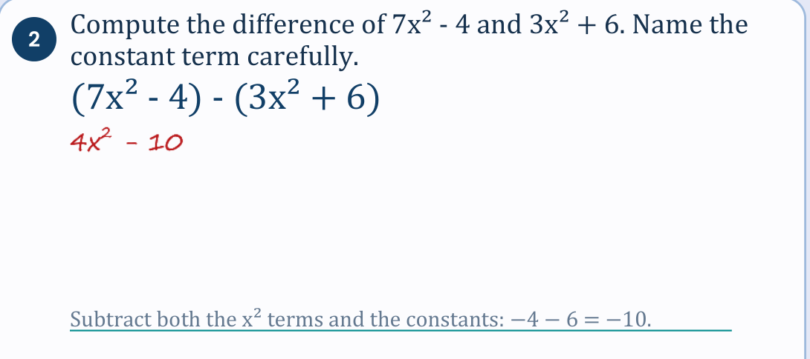
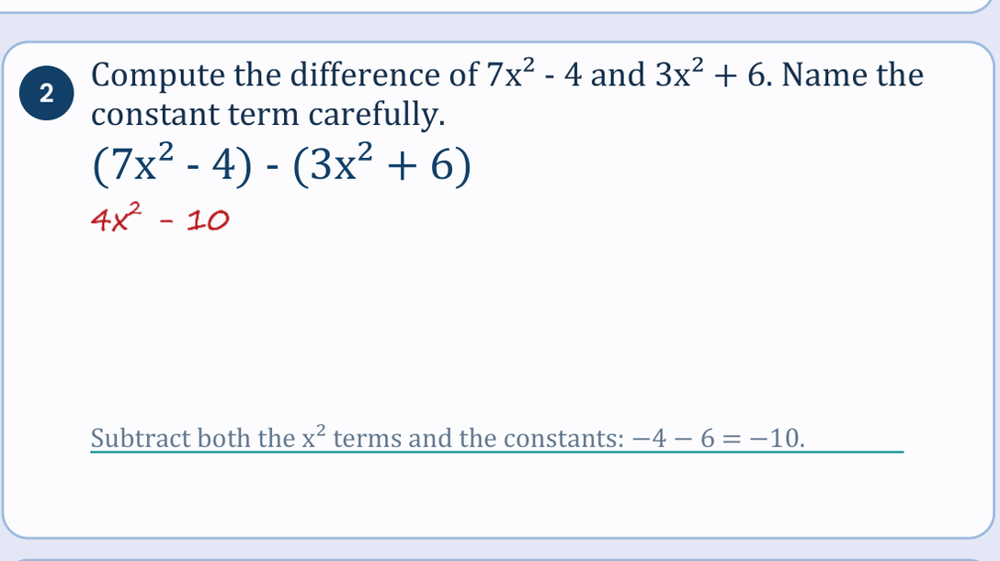
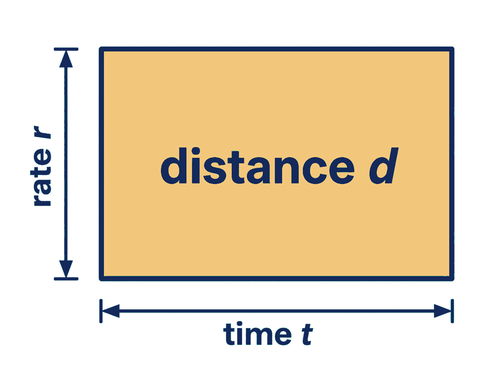
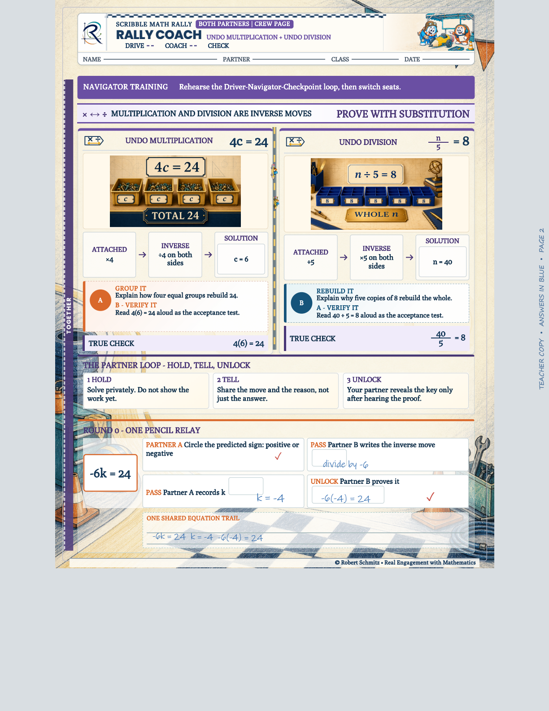
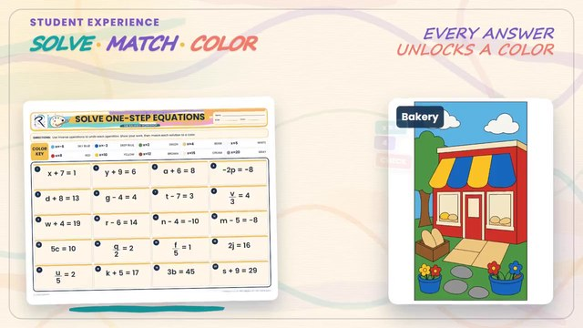
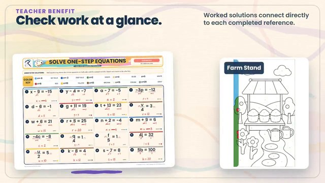
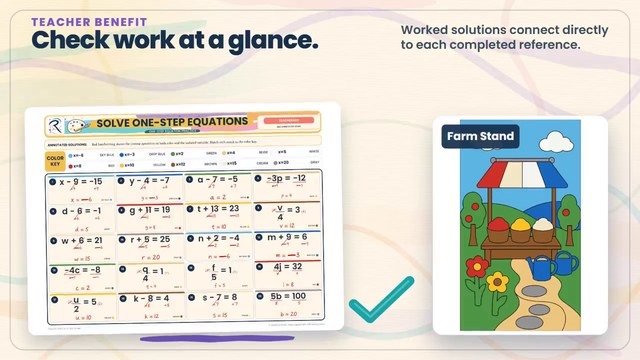

Instructional Design · eLearning · Curriculum Systems Remote
Design once.
Ship 144 lessons.
I'm Robert Schmitz — an instructional designer for edtech and L&D teams. I turn standards, documented misconceptions, and evidence design into complete learning systems, with every teacher edition rendered from the same source as the learner pages. That check is my interaction design, running live.
Solve for x. Restrictions count.
y = mx + b The entire quantity y − b is divided by m — and the rearrangement earns its restriction, m ≠ 0. In the module, this feedback confirms the reasoning, not just the answer. Close — but that only divides b by m. The entire quantity y − b must be divided by m: x = (y − b) / m. This grouping error is the most common wreck in this skill, so it gets its own feedback string. The signs are reversed. Subtracting b from both sides leaves y − b, not b − y — and those two quantities are opposites, so this answer is off by a factor of −1. This divides y before b was moved. Undo the operations in reverse order: subtract b from both sides first, then divide the whole quantity y − b by m.Built in HTML from my Storyline storyboard spec — the per-choice feedback strings are the design. See the full 16-slide interaction design →
Scalable Algebra 1 Architecture
Course materials drift at scale: each lesson reinvents structure, practice disconnects from objectives, and answer keys stop matching the pages learners actually use.
Curriculum architect and sole instructional designer — course architecture, evidence design, page systems, and the production pipeline spec.
One course spine carried 144 lessons across ten units. Teacher editions render from the same source as student pages, so keys cannot drift — and a fail-closed publication gate stops any lesson whose parts don't resolve.
- 144 lessons · 10 units
- Annotated teacher edition for every lesson
- District-wide Canvas package, run by instructors who didn't build it
- 10,000+ standards-aligned assessment items


{kind=link}

Same lesson, same renderer — one in student mode, one in teacher-key mode. Select a page to inspect it.
Methods, tools, and credentials
Selected work
Case studies

Scalable Algebra 1 Architecture
Problem → architecture → pipeline → artifacts: how one course spine carried 144 lessons without quality drift — and what remains to evaluate.
Read the case study →
Interactive Algebra 1 Module
Gated commitment, per-choice misconception feedback, and a written production spec across 16 slides — with the key check playable in the hero above.
Read the case study →
Professional Development Design
Adult learning design: clear outcomes, active practice, transfer into daily work.
Read the case study →Also: assessment design & alignment and the AI-enhanced ID workflow.
The system in action
One practice engine, end to end
Why a walkthrough?
Pages show the artifacts; the walkthrough shows the interaction design — how an answer becomes feedback and what the facilitator needs to run it. The same design thinking drives the Storyline module: commit first, then feedback that names the error.
-

Commit. The learner solves before anything on the scene can change. -

Feedback. A correct solution releases exactly one region — a wrong one leaves a visible hole. -

Close the loop. The completed scene is the self-check; the worked key is the facilitator's diagnosis tool.
Let's build your next learning system
Remote-ready. Open to instructional design, curriculum development, and eLearning roles across edtech, corporate L&D, and higher education.